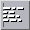
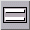

<!-- Documentation XQuad (c)1995-2000 AXENE contact axene@axene.org>
<html>

<head>
<title>Horizontal Toolbar: &quot;Text Manipulations&quot;</title>
</head>

<body BGCOLOR="#FFFFFF" BACKGROUND="Images/back.gif" TEXT="#000000">

<p ALIGN="right">  </p>

<p><br>
<br>
The text manipulation toolbar lets the user select horizontal and vertical alignment,
control line spacing, and select the direction of text flow. The default alignment modes
are: 

<ul>
  <li>aligned at the left for text</li>
  <li>aligned at the right for numbers (numeric values, dates, hours)</li>
  <li>centered for boolean values</li>
</ul>

<p>Only text can flow over into adjacent cells (depending on the alignment mode and the
direction of text flow) if the column width is inadequate and if the adjacent columns are
empty.</p>

<p>In vertical text mode, all alignment modes are still available, but they have the
inverse effects: horizontal alignment acts vertically and vice versa.<br>
<br>
</p>

<hr>

<p align="center"><br>
 <br>
<small><i>Screen shot: Text manipulations toolbar.</i></small></p>

<p><br>
</p>

<hr>

<p><br>
</p>

<h3>First Section of the Toolbar:</h3>

<ul>
  <li> <a NAME="left_icon">The first button <strong>aligns the
    selected cell's contents at the left</strong>. This button is engaged whenever the active
    cell uses left alignment. If clicked when engaged, this button returns the selected cells
    to the default alignment mode. In left alignment mode texts may flow over the cell border
    to the right. </a><br>
    &nbsp;</li>
  <li> <a NAME="center_icon">The second button <strong>centers
    the selected cell's contents horizontally</strong>. This button is engaged whenever the
    active cell uses centering. If clicked when engaged, this button returns the selected
    cells to the default alignment mode. When centered, text can flow over cell borders to
    both the left and right.</a><br>
    &nbsp;</li>
  <li> <a NAME="right_icon">The third button <strong>aligns
    the selected cell's contents at the right</strong>. This button is engaged whenever the
    active cell uses right alignment. If clicked when engaged, this button returns the
    selected cells to the default alignment mode. In right alignment mode texts may flow over
    the cell border to the left.</a><br>
    &nbsp;</li>
  <li> <a NAME="justify_icon">The last button <strong>horizontally
    justifies (from left to right) the selected cell's contents</strong>. This button is
    engaged whenever the active cell uses horizontal justification. If clicked when engaged,
    this button returns the selected cells to the default alignment mode.</a></li>
</ul>

<p><br>
</p>

<h3>Second Section of the toolbar:</h3>

<ul>
  <li> <a NAME="top_icon">The first button <strong>aligns the
    selected cell's contents at the top of the cell</strong>. This button is engaged whenever
    the active cell uses top alignment mode. If clicked when engaged, it returns the selected
    cells to centered vertical alignment.</a><br>
    &nbsp;</li>
  <li> <a NAME="bottom_icon">The second button <strong>aligns
    the selected cell's contents at the bottom of the cell</strong>. This button is engaged
    whenever the active cell uses bottom alignment mode. If clicked when engaged, it returns
    the selected cells to centered vertical alignment.</a><br>
    &nbsp;</li>
  <li> <a NAME="vjustify_icon">The last button <strong>vertically
    justifies (from top to bottom) the selected cell's contents</strong>. This button only
    affects those cells in &quot;multiple line&quot; mode and is engaged whenever the active
    cell uses vertical justification mode. If clicked when engaged, it returns the selected
    cells to centered vertical justification. Vertical justification in </a><a HREF="HBar_Text.html#multiline_icon">multi-line mode</a> lets the user evenly distribute
    vertical space (cell height) between text lines.</li>
</ul>

<p><br>
</p>

<h3>Third Section of the Toolbar:</h3>

<ul>
  <li> <a NAME="multiline_icon">This button <strong>lets
    the user shift selected cells to &quot;multi-line&quot; mode</strong>. Multi-line mode
    applies only to cells containing text. Rather than display text on one line, causing it to
    spill over into adjacent cells when possible, the text will be displayed within a single
    cell using several lines. This button is engaged whenever the active cell uses multi-line
    mode. If clicked when engaged, it returns the selected cells to single line mode.</a></li>
</ul>

<p><br>
</p>

<h3>Last Section of the Icon Bar:</h3>

<ul>
  <li> <a NAME="down2up_icon">The first button <strong>displays
    the selected cell's contents at a -90° angle</strong>. This button is engaged whenever
    the active cell uses -90° writing mode. If clicked when engaged, it returns the selected
    cells to horizontal writing mode.</a><br>
    &nbsp;</li>
  <li> <a NAME="up2down_icon">The second button <strong>displays
    the selected cell's contents at a +90° angle</strong>. This button is engaged whenever
    the active cell uses +90° writing mode. If clicked when engaged, it returns the selected
    cells to horizontal writing mode.</a></li>
</ul>

<p><br>
</p>

<hr>

<p ALIGN="right"></p>
</body>
</html>
